Manual de Configuración Shopify × Dreamlove
Guía detallada paso a paso
Índice
-
Crear cuenta y elegir plan
Regístrate en shopify.com. Tras el periodo de prueba, deberás elegir un plan (Basic, Shopify, Advanced o Plus) desde Configuración → Plan. Consulta los precios actualizados en shopify.com/es/precios.
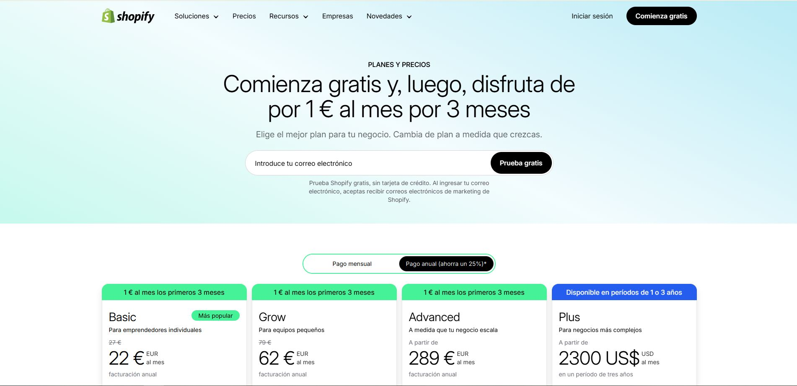
Selección de plan en Shopify. -
Detalles de la tienda
En Configuración → Información/Detalles de la tienda revisa y completa:
- Nombre de la tienda y datos de contacto (correo de cuenta, teléfono y dirección comercial).
- Valores predeterminados de la tienda: zona horaria, moneda base, formato de moneda, sistema de unidades y unidad de peso.
- Identificador de pedido (prefijo/sufijo si lo usas).
- Correo del remitente (desde Configuración → Notificaciones): configura y autentica tu dominio (SPF/DKIM/DMARC) para que los emails de pedidos se entreguen correctamente.
- Idioma y formato regional del panel de control (afecta a números, fecha y hora en el admin).
- Moneda que ven los clientes y, si vendes en varios países, activa monedas locales en Configuración → Mercados.
Recomendamos mantener como predeterminada la moneda europea (EUR), que será la utilizada en la importación del catálogo. Posteriormente, puedes añadir mercados adicionales y habilitar monedas locales desde Configuración → Mercados.
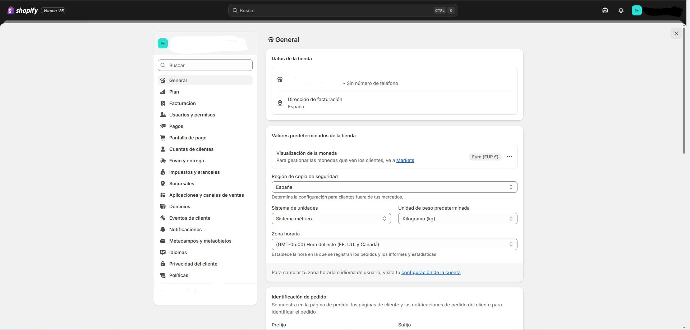
Configuración -> General -
Plan (Configuración → Plan)
Tras registrarte y finalizar la prueba, elige un plan (Basic, Shopify, Advanced o Plus) desde Configuración → Plan. En cualquier momento puedes cambiar a otro plan disponible. Consulta precios y condiciones vigentes en la página oficial de Shopify. Ver precios. Cambiar de plan.
- Elegir plan y ciclo de facturación: mensual o anual. Los planes mensuales te permiten máxima flexibilidad; los anuales suelen tener descuento. Más información.
- Método de pago y facturación: añade tu método de pago y revisa el ciclo de facturación y los posibles umbrales de facturación (cuándo se generan las facturas). Ciclos y umbrales.
- Cambios de plan: al actualizar o bajar de plan, Shopify aplica prorrateos y ajustes en la siguiente factura. Revisa las implicaciones antes de confirmar. Cambios de plan y facturación.
- Comisiones en pagos: si usas Shopify Payments, las tarifas por tarjeta dependen de tu plan y no hay cargos por transacción de terceros para pedidos procesados con Shopify Payments. Coste Shopify Payments · Cargos y costos.
- Pausar o desactivar la tienda: si necesitas parar temporalmente, valora el plan de pausa; también puedes desactivar la tienda desde el admin. Pausar o desactivar.
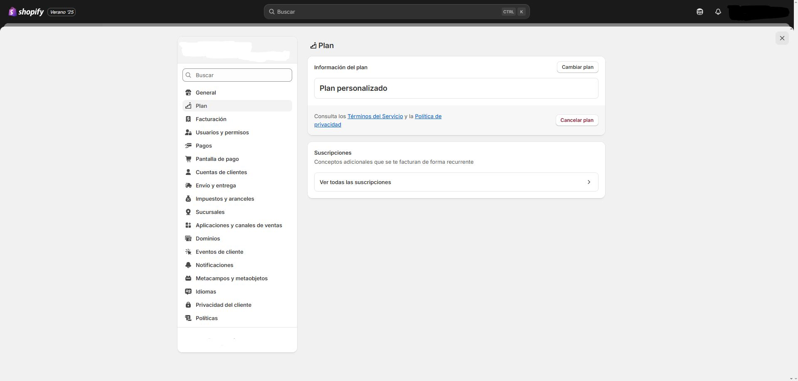
Selección de plan en Shopify (Configuración → Plan). -
Facturación (Configuración → Facturación/Billing)
En Configuración → Facturación puedes gestionar tu información de facturación y forma de pago, ver facturas próximas y pasadas, y consultar los tipos de cargos (suscripción, apps, etiquetas de envío, impuestos, etc.). Desde aquí también puedes pagar en tu moneda local cuando esté disponible. Gestionar la facturación.
Tipos de cargos que verás en las facturas
- Suscripción del plan (Basic/Shopify/Advanced/Plus).
- Cargos de apps (ciclo de 30 días, independiente del plan).
- Otros cargos: etiquetas de envío, comisiones y tasas e impuestos aplicables.
Ciclos de facturación y umbrales
- Plan de suscripción: ciclo de 30 días o anual.
- Apps: ciclo de 30 días por app.
- Zona horaria de emisión: UTC.
- Umbral de facturación: si tus cargos acumulados superan el umbral, Shopify emite una factura antes del final del ciclo (útil para etiquetas de envío, apps, etc.).
Formas de pago y datos de facturación
- Actualizar la forma de pago (tarjeta), añadir método de respaldo y cambiar dirección de facturación.
- ACH/banco (EE. UU.): puedes agregar y verificar cuenta bancaria si corresponde.
- Moneda local: cuando esté disponible, puedes pagar facturas en tu moneda local.
Ver y exportar facturas (PDF/CSV)
Desde la página de facturación puedes consultar el desglose (suscripción, apps, otros cargos e impuestos) y exportar la factura en PDF o CSV para tu contabilidad.
Impuestos en facturas (IVA/UE y Reino Unido)
Si operas en la UE o Reino Unido, Shopify ofrece herramientas para generar facturas con IVA y cumplir requisitos de facturación (incluida la visualización/descarga desde la confirmación del pedido). Revisa también Shopify Tax para validación de NIF-IVA y exención de inversión del sujeto pasivo cuando proceda.
Cambios de plan y prorrateos
Si cambias de plan (subes o bajas), Shopify puede aplicar ajustes/prorrateos en la siguiente factura. Revisa las implicaciones antes de confirmar el cambio.
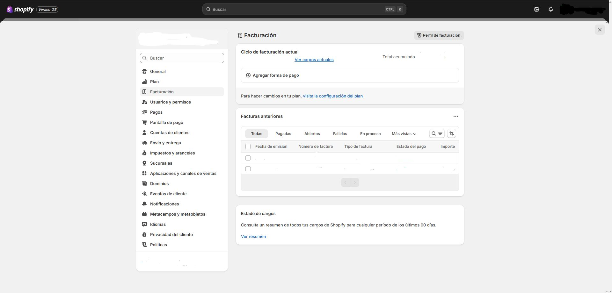
Configuración → Facturación: métodos de pago, facturas y exportación. -
Usuarios y permisos (Configuración → Usuarios)
Desde Configuración → Usuarios puedes invitar usuarios (empleados) a tu tienda u organización, asignarles roles y limitar su acceso con permisos granulares. Esta es la forma recomendada de dar acceso seguro a tu equipo. Gestionar usuarios.
1) Invitar usuarios
- Ve a Configuración → Usuarios y pulsa Invitar usuario.
- Introduce nombre y correo, y asigna uno o varios roles (ver más abajo).
- Revisa los permisos que quedarán activos y envía la invitación.
2) Roles y permisos
- Un rol agrupa permisos según su categoría (tienda, organización, POS). Puedes asignar varios roles a un mismo usuario; los permisos se acumulan. Roles · Categorías de rol.
- Los permisos determinan qué puede ver/editar/borrar el usuario (productos, pedidos, configuración, apps…). Permisos · Permisos de la tienda.
- (Tiendas antiguas) Si ves “Usuarios y permisos” heredado, consulta la tabla completa de permisos por área. Permisos (modelo antiguo) · Descripciones.
- (POS) Gestión de empleados de punto de venta y roles POS. Requisitos de roles/permisos.
3) Seguridad: Autenticación en dos pasos (2FA)
- Recomendado para todos los usuarios; en Plus puede exigirse para toda la organización (Usuarios → Seguridad). 2FA para usuarios · Exigir 2FA (Plus).
- Cómo activarla con app autenticadora (QR) paso a paso. Guía Authenticator.
4) Colaboradores (agencias/partners)
Si necesitas que una agencia trabaje en tu tienda, usa una cuenta de colaborador (no ocupa plaza de staff) y controla el acceso por permisos. El partner te enviará una solicitud que puedes aprobar desde tu admin. Solicitar acceso (Partners) · Docs de colaborador.
5) Transferir propiedad
Solo el propietario de la tienda puede transferir la propiedad a otro usuario desde Configuración → Usuarios. Si trabajas con una organización (Plus), existe también la transferencia de propiedad de la organización. Cambiar/transferir propiedad de la tienda · Propiedad de la organización.
6) Auditoría y actividad
- Acceso reciente y historial de inicio de sesión por usuario (IP, ubicación, navegador). Actividad de usuario.
- Registro de actividad de la tienda (cambios recientes de usuarios/apps/canales). Activity logs.
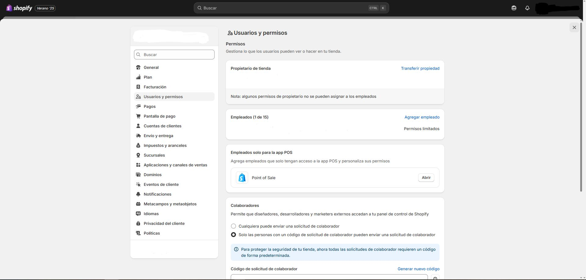
Configuracion -> Usuarios y permisos: invitaciones, roles, 2FA y auditoría. -
Pagos (Configuración → Pagos)
Desde Configuración → Pagos defines cómo cobran tus clientes: Shopify Payments (si está disponible), proveedores externos (pasarelas) y métodos manuales (transferencia, contra reembolso, etc.). Shopify Payments (visión general).
1) Shopify Payments (recomendado cuando esté disponible)
- Activación: pulsa Activar Shopify Payments y completa la verificación KYC (datos de negocio, titular y cuenta bancaria). Shopify exige 2FA para recibir pagos. Configurar/activar cuenta.
- Configuración: monedas, países, prevención de fraude y pagos acelerados (Shop Pay, Apple Pay, Google Pay) desde la misma pantalla. Ajustes de Shopify Payments · Pagos y botones acelerados.
- Modo de prueba: permite simular cobros en un entorno seguro (no usar en producción). Modo de prueba.
2) Proveedores externos de pago (tarjeta y locales)
- Si Shopify Payments no está disponible o prefieres otro gateway, elige entre más de 100 pasarelas compatibles desde esta misma página. Configurar proveedor externo · Listado por país.
- PayPal: conecta tu cuenta (sección “Formas de pago adicionales → PayPal”). Configurar PayPal.
3) Métodos de pago manual (transferencia, contra reembolso)
Crea métodos personalizados (por ejemplo, Transferencia bancaria o Pago al recibir). Deberás marcar el pedido como pagado cuando recibas el importe. Pagos manuales.
4) Autorización y captura del pago
Define si la captura es automática (se cobra al momento) o manual (queda “Autorizado” hasta que lo captures). Útil si verificas stock o fraude antes de cobrar. Capturar pagos.
5) Pagos, reembolsos y abonos
- Reembolsos: emítelos desde el pedido; el importe se deduce del siguiente pago (puede crear saldo negativo). Reembolsos en Shopify Payments.
- Pagos faltantes o menores: consulta estados, plazos y causas habituales. Pagos menores o faltantes.
6) Internacional y medios locales
Si vendes en varios países, en Markets verás formas de pago locales elegibles por mercado y un enlace directo a esta configuración para activarlas. Pagos por mercados.
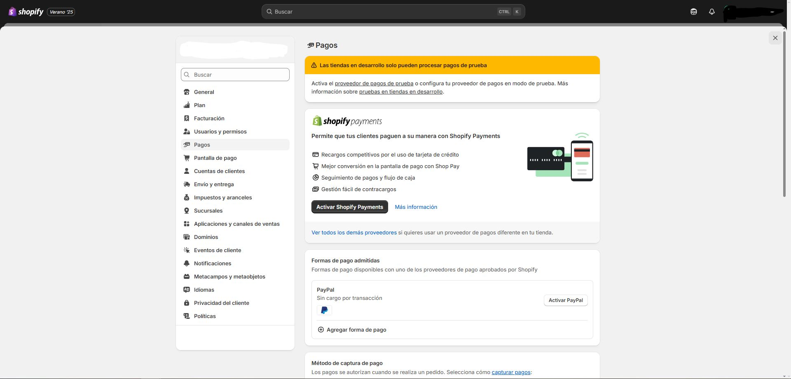
Configuración -> Pagos: activación de Shopify Payments, proveedores externos y métodos manuales. -
Pantalla de pago (Configuración → Pantalla de pago)
Desde Configuración → Pantalla de pago defines la experiencia de checkout: cuentas de cliente, método de contacto, campos obligatorios/opcionales, propinas, textos y personalización visual. Guía oficial de Pantalla de pago.
1) Cuentas de cliente y método de contacto
- Cuentas de cliente: permite checkout como invitado, opcional o requerido. Ajusta la “Experiencia de la cuenta” para decidir si el cliente debe iniciar sesión o puede pagar como invitado.
- Método de contacto: elige si pides email, teléfono o ambos, y si incluyes la casilla de consentimiento de marketing.
2) Campos del formulario de pago
Puedes marcar campos como obligatorios, opcionales u ocultos (por ejemplo, segundo apellido, empresa o teléfono) para simplificar el proceso y mejorar la conversión. Editar opciones del formulario.
3) Propinas (tips)
Activa la opción de propinas en el checkout y personaliza los textos desde el contenido por defecto del tema (sección “Checkout & system”). Configurar propinas.
4) Apariencia y personalización
- Editor de checkout y cuentas: personaliza estilo (logo, colores, tipografías) y estructura del checkout con el editor. En planes básicos tienes el editor y apps para “Thank you”/“Order status”; en Shopify Plus se amplía a páginas de Información, Envío y Pago, además del Checkout Branding API.
• Personalizar checkout con el editor · Branding editor (Plus) · Checkout Branding API (Plus). - Formas de pago visibles: oculta/ordena/renombra métodos con apps compatibles si necesitas priorizar ciertas opciones. Personalizar opciones de pago.
5) Idioma y textos del checkout
Cambia los textos del checkout desde Configuración → Pantalla de pago → Idioma del checkout (Administrar). Para traducir el resto de la tienda usa “Translate & Adapt” o la traducción del tema. Traducir el checkout · Traducir el tema.
6) Recuperación de checkouts abandonados
Crea una automatización en Marketing → Automatizaciones para enviar emails de carrito/checkout abandonado con enlace de retorno; puedes incluir descuentos para incentivar la finalización. Automatización de checkout abandonado · Informe y eficacia · Descuento automático en emails.
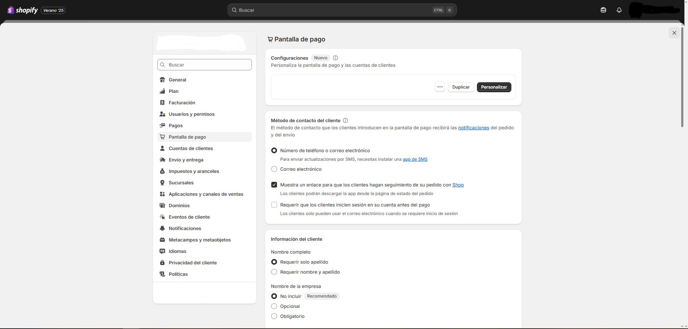
Configuración -> Pantalla de pago: cuentas, campos, propinas, estilo y automatizaciones. -
Cuentas de clientes (Configuración → Cuentas de clientes)
Las cuentas permiten a tus clientes iniciar sesión para ver pedidos, gestionar direcciones y agilizar el checkout (autorrelleno). Shopify ofrece dos experiencias: “Cuentas de clientes” (nuevas) y “Cuentas antiguas (legacy)”. En las nuevas, el acceso es sin contraseña mediante un código de 6 dígitos enviado por email, y también pueden iniciar sesión con Shop (Shop Pay). Visión general · Nuevas cuentas de cliente.
1) Elegir el tipo de cuenta y activarlas
- Entra en Configuración → Cuentas de clientes y selecciona Customer accounts (nuevas) o Legacy (antiguas). Las nuevas usan código por email (sin contraseña) y son la experiencia recomendada a futuro.
- Habilita que se muestre el enlace “Iniciar sesión” en tu tienda y checkout si quieres ofrecer acceso opcional.
2) ¿Requeridas u opcionales en el checkout?
Si quieres exigir iniciar sesión antes de pagar, ve a Configuración → Checkout y activa la opción correspondiente (requiere cuenta antes del pago). Si prefieres menos fricción, déjalas como opcionales para permitir checkout como invitado.
3) Inicio de sesión con Shop y Shop Pay
- Con las nuevas cuentas, si ofreces Shop Pay, el botón Sign in with Shop se activa automáticamente; los datos guardados aceleran el pago en un toque.
4) Personalizar la página de cuenta
Personaliza el aspecto de checkout y cuentas (logo, colores, bloques/apps) con el Checkout & Accounts editor.
5) Recuperación/soporte al cliente
- Legacy: si usas cuentas antiguas, los clientes pueden restablecer contraseña; revisa también tus plantillas de email en Configuración → Notificaciones.
- Nuevas cuentas: el acceso es por código de un solo uso enviado por email (no hay contraseña que restablecer).
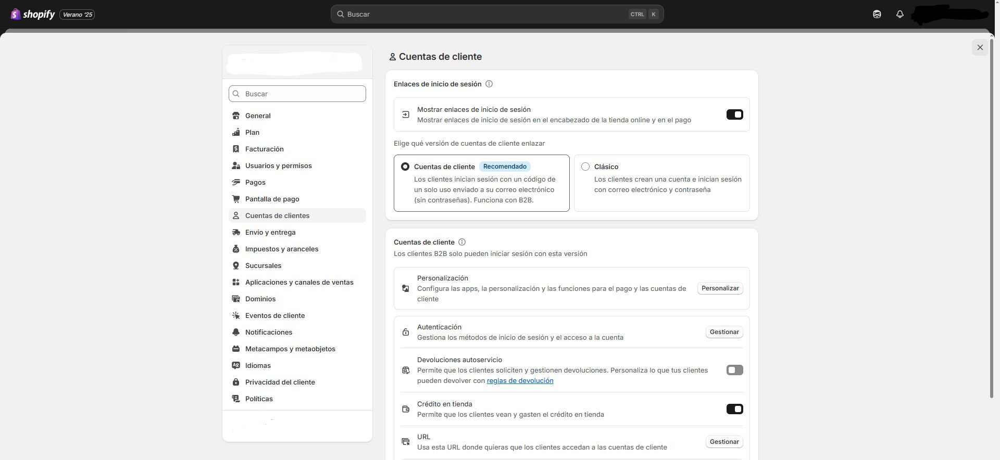
Configuración -> Cuentas de clientes: activación, opciones en checkout y personalización de la página de cuenta. -
Envío y entrega (Configuración → Envío y entrega)
Desde Configuración → Envío y entrega defines perfiles de envío, zonas y tarifas; además, configuras paquetes, retiro en tienda y entrega local. Es el punto central para que tus clientes vean opciones y costes correctos en el checkout. Cómo funciona el envío en Shopify.
1) Perfiles de envío
- Usa el Perfil general para la mayoría de productos, o crea perfiles personalizados (p. ej., artículos voluminosos/frágiles con tarifas distintas).
- En cada perfil, define zonas y tarifas por sucursal (ubicación) que prepara pedidos.
2) Zonas de envío y Shopify Markets
- Crea zonas (grupos de países/regiones) y asígnales tarifas. Un país/región solo puede pertenecer a una zona por grupo de sucursales.
- Para poder añadir un país a una zona, debe estar en un Mercado activo (Markets).
3) Tarifas de envío (qué puedes ofrecer)
- Tarifa plana (única o por tramos), gratuito (p. ej., a partir de cierto importe), o condicionadas por precio/peso.
- Tarifas calculadas por transportista (CCS): muestra el coste en tiempo real desde tu cuenta UPS/FedEx/DHL, etc. Requiere activar CCS y conectar la cuenta del transportista.
4) Paquetes, pesos y dimensiones
- Guarda tipos de paquete y define un paquete predeterminado (se usa para calcular tarifas por peso o por transportista).
- Minimiza tamaño/peso para evitar sobrecostes (dimensional weight).
5) Shopify Shipping (etiquetas)
- Compra/imprime etiquetas con tarifas con descuento (si está disponible en tu país). Adminístralas desde la página Etiquetas de envío (reimpresión, anulación, manifiestos y recogidas).
6) Retiro en tienda y Entrega local
- Retiro en tienda: añade la opción para que el cliente recoja su pedido en una sucursal.
- Entrega local: ofrece reparto en un radio o por códigos postales desde cada sucursal elegible.
7) Envíos internacionales: aranceles e impuestos de importación
- Puedes cobrar aranceles/impuestos en el checkout (DDP) si cumples requisitos; revisa compatibilidades con personalizaciones del checkout e impuestos.
- Si cobras en checkout, usa etiquetas DDP del transportista compatible al preparar el envío.
8) Flujo de preparación y seguimiento
- Prepara el pedido, compra la etiqueta y añade tracking. El estado se actualiza y el cliente recibe notificaciones según tu configuración.
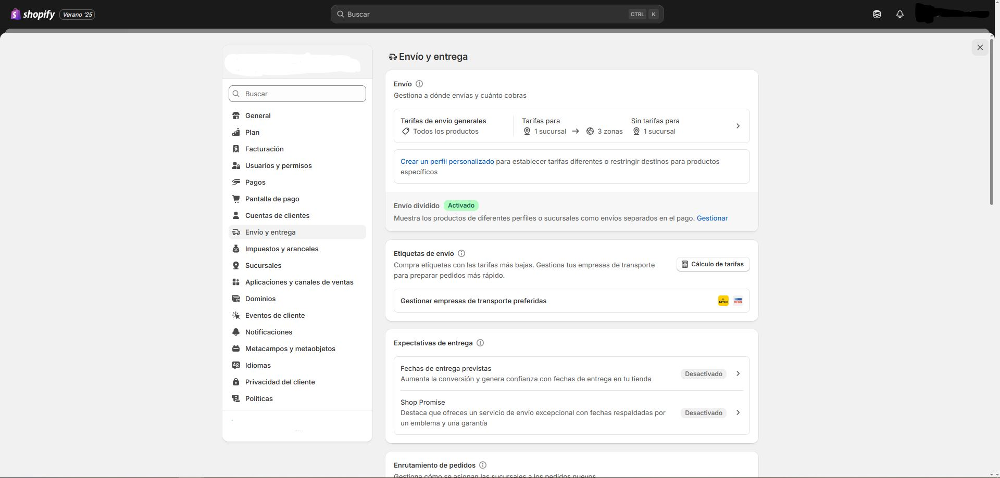
Configuración -> Envío y entrega: perfiles, zonas, tarifas, paquetes, retiro y entrega local. -
Impuestos y aranceles (Configuración → Impuestos y aranceles)
En Configuración → Impuestos y aranceles defines tus regiones fiscales, registraciones (NIF-IVA, etc.), reglas de cálculo y, si vendes internacionalmente, la recaudación de aranceles e impuestos de importación en el checkout. Shopify facilita el cálculo, pero no presenta ni paga impuestos por ti salvo que actives flujos específicos de Shopify Tax. Guía de impuestos.
1) Configurar regiones fiscales y registros
- Entra en Impuestos y aranceles y añade tus países/regiones de cobro. Después, agrega tus números fiscales (cuando aplique). Podrás editar registros, exenciones y anulaciones desde la misma página. Configurar impuestos · Gestionar registros.
- UE (IVA): revisa si te aplica OSS/IOSS y el umbral de 10 000 € para microempresas. Referencia fiscal UE.
2) Precios con impuestos incluidos/excluidos
- Activa “Incluir impuesto en el precio del producto” si trabajas con PVP IVA incluido (típico en la UE). Incluir/excluir impuestos en precios.
- Para que el precio mostrado se adapte al país (incluido o excluido según corresponda), activa los precios dinámicos con impuestos incluidos junto con Markets. Precios dinámicos con impuestos.
3) Exactitud de cálculo: categorías/códigos de producto
Asigna categorías de producto (o códigos fiscales) para mejorar la exactitud de los cálculos sin mantener anulaciones manuales. Si tienes anulaciones que chocan con la categoría, prevalece la anulación. Categorías de producto.
4) Aranceles e impuestos de importación (ventas internacionales)
- Activa la recaudación en el checkout desde Impuestos y aranceles → Aranceles e impuestos de importación. Revisa compatibilidades antes de activarlo. Guía de aranceles e impuestos de importación · Activar cobro en checkout.
- Necesitas completar por producto el código HS y país de origen para cálculos correctos (sin ellos, Shopify infiere por descripción/categoría). Requisitos de datos.
- Importante: cobrar aranceles/impuestos de importación en el checkout puede anular anulaciones y tasas fiscales manuales mientras esté activo; revisa personalizaciones de checkout y configuración fiscal. Consideraciones y compatibilidad.
Nota: Shopify te ayuda a calcular impuestos, pero no sustituye el asesoramiento fiscal ni presenta declaraciones por ti (salvo flujos específicos de Shopify Tax). Consulta a tu asesor o autoridad fiscal local. Alcance de soporte.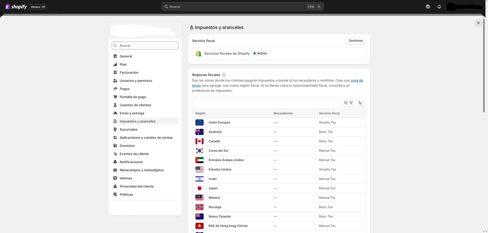
Configuración -> Impuestos y aranceles: regiones, registros, precios con impuesto, categorías de producto y cobro de aranceles. -
Sucursales (Configuración → Sucursales)
Una sucursal es cualquier lugar físico o app donde vendes, guardas inventario o preparas/envías pedidos. Puedes tener varias y la cantidad máxima depende de tu plan. Qué es una sucursal y límites por plan.
1) Crear y configurar una sucursal
- Ve a Configuración → Sucursales y pulsa Añadir sucursal.
- Completa Nombre y Dirección. Decide si “el inventario de esta sucursal está disponible para pedidos online”.
- (Opcional) Hazla predeterminada si será tu origen principal de preparación de pedidos.
2) Inventario por sucursal
- Asigna existencias por producto y sucursal (desde el producto o con el editor masivo).
- La gestión múltiple permite combinar stock propio con apps de logística/dropshipping.
3) Enrutamiento/prioridad de preparación
Define reglas de enrutamiento de pedidos para decidir desde qué sucursal se envía (prioridades, proximidad, stock, etc.). Como desempate, añade “Enviar desde la sucursal más cercana”.
4) Retiro en tienda y entrega local (por sucursal)
- Activa Retiro en tienda por cada sucursal que ofrezca recogida.
- Configura Entrega local con radio de distancia o códigos postales por sucursal.
5) POS y sucursal del dispositivo
En tiendas con POS, asigna cada dispositivo a su sucursal y gestiona la suscripción POS por sucursal.
6) Perfiles de envío y grupos de sucursales
En Perfiles de envío, las sucursales se agrupan para calcular tarifas. Las sucursales inactivas aparecen como Inactivas y no se usan en el checkout hasta activarlas.
7) Desactivar o eliminar una sucursal
- Antes de desactivarla, completa y/o reasigna todos los pedidos y transferencias asociados.
- No puedes desactivar la predeterminada (cámbiala primero) ni una sucursal de app de terceros/privada (elimina la app).
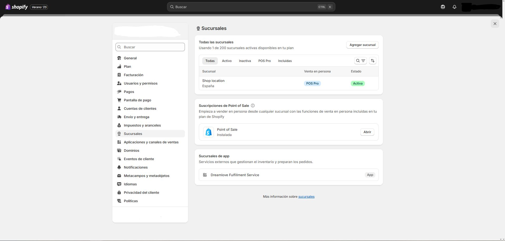
Configuración -> Sucursales: alta/gestión, inventario por ubicación, reglas de enrutamiento y opciones locales. -
Aplicaciones y canales de ventas (Configuración → Aplicaciones y canales de ventas)
Desde esta sección instalas y gestionas aplicaciones que añaden funciones a tu tienda (marketing, envíos, analítica…), y canales de ventas como Shop, Google & YouTube, Facebook & Instagram o marketplaces. Todo queda centralizado en el Admin.
1) Instalar aplicaciones
- Shopify App Store: busca la app y pulsa Instalar; autoriza permisos en el Admin.
- Enlace de terceros: instala apps privadas/personalizadas con su URL de instalación.
- Tras instalar, la verás en Configuración → Aplicaciones y canales de ventas (abre su ficha para preferencias, permisos y facturación de la app).
2) Gestionar apps, permisos y facturación
- Desde la ficha de cada app puedes abrirla, revisar permisos y política de privacidad, ajustar sus preferencias y consultar su facturación o plan.
- Si la app añade bloques al panel, podrás activarlos desde el propio Admin o desde el editor del tema (ver punto 4).
3) Desinstalar aplicaciones
- En Configuración → Aplicaciones y canales de ventas, abre el menú de la app → Desinstalar.
- Si la app tenía inventario en una sucursal de app, sigue el flujo guiado para retirar/trasladar existencias antes de eliminarla.
4) Bloques de app en el tema (App blocks / App embeds)
- Con temas Online Store 2.0 puedes añadir bloques de app o app embeds desde Tienda online → Personalizar (categoría “Apps”).
- Úsalos para insertar widgets (reseñas, badges, formularios, etc.) sin editar código del tema.
5) Añadir canales de ventas
- Ve a Configuración → Aplicaciones y canales de ventas y pulsa Visitar Shopify App Store.
- Busca el canal (p. ej., Shop, Google & YouTube, Facebook & Instagram) y pulsa Añadir canal.
- Cada canal incorpora su panel con métricas y ajustes propios.
6) Disponibilidad de productos y colecciones
- Al añadir un canal, por defecto tus productos quedan disponibles para ese canal; puedes excluir artículos desde la ficha de producto (Canales de venta → Gestionar).
- La disponibilidad de colecciones se gestiona desde Productos → Colecciones (no cambia la disponibilidad individual de cada producto).
7) Ejemplos rápidos
- Shop (canal nativo): configura el canal y personaliza tu tienda en la app Shop; para aparecer, los productos deben tener imagen, precio y categoría.
- Google & YouTube: sincroniza catálogo, publica gratis en Shopping y crea campañas.
- Facebook & Instagram: sincroniza catálogo y habilita compras sociales.
- Marketplaces (Marketplace Connect): conecta Amazon/eBay y gestiona publicaciones desde la app.
Consejos:- Instala solo lo necesario; cada app añade scripts y puede impactar el rendimiento.
- Revisa permisos, cobros y política de cada app antes de instalar.
- Audita periódicamente apps y canales; desinstala las que no uses.
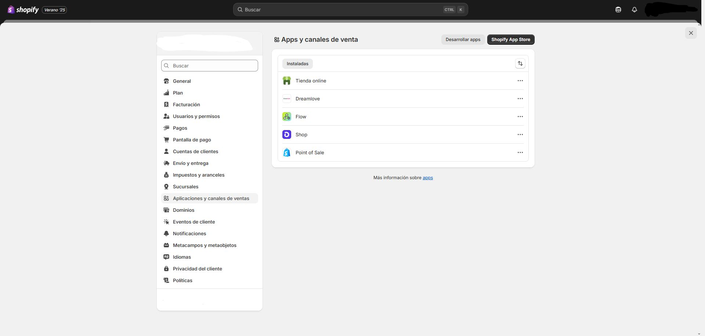
Configuración -> Aplicaciones y canales: instalación, gestión y disponibilidad por canal. -
Dominios (Configuración → Dominios)
Desde Configuración → Dominios puedes usar un dominio personalizado para tu tienda, gestionarlo y definir cuál será el dominio principal que verán tus clientes.
- Comprar dominio en Shopify: proceso guiado y gestión desde el propio panel. Cómo comprar un dominio en Shopify.
- Conectar dominio externo (GoDaddy, IONOS, Cloudflare, etc.):
- Conexión automática (GoDaddy/IONOS/Cloudflare): Conectar automáticamente.
- Conexión manual (editar DNS en tu proveedor): Conectar manualmente.
- Guía general y compatibilidades: Conectar un dominio externo.
- Transferir dominio a Shopify (mover la gestión del dominio a Shopify): Transferir dominio a Shopify.
- Elegir dominio principal (el que verá el cliente): Cambiar dominio principal.
- SSL/TLS automático (seguridad HTTPS): certificados gratuitos para dominios agregados a Shopify; la emisión puede tardar hasta 48 h. Conexiones seguras (TLS/SSL). Solución de problemas.
- Gestión continua: subdominios, renovación automática, edición de DNS, alias/redirecciones. Gestionar dominios.

Configuración -> Dominios: Gestión de Dominios en Shopify. -
Eventos de clientes (Configuración → Eventos de cliente)
En Configuración → Eventos de cliente gestionas los píxeles que registran acciones del visitante (ver página, ver producto, añadir al carrito, iniciar pago, compra, etc.). Puedes revisar píxeles de aplicación (instalados por apps/canales) y añadir píxeles personalizados para enviar datos a tus herramientas de analítica/ads cumpliendo la privacidad del cliente. Guía de Píxeles y eventos.
1) Privacidad y consentimiento
- Configura el banner de cookies y las preferencias en Configuración → Privacidad del cliente (política, banner y exclusión). Integra tu CMP si usas uno.
- Si trabajas con Google (GCM v2), usa la Customer Privacy API o un píxel personalizado para pasar el consentimiento a Google.
2) Instalar y gestionar píxeles
- Píxeles de aplicación: se añaden con apps/canales (Facebook, Google, etc.). Revísalos en la pestaña “Píxeles de aplicación” y consulta sus permisos.
- Píxeles personalizados: pulsa Añadir píxel personalizado, pega tu script, define permisos de datos y guarda. Úsalos para GTM, mediciones propias, etc.
3) Eventos estándar disponibles
page_viewed,collection_viewed,product_viewed,search_submittedproduct_added_to_cart,product_removed_from_cartcheckout_started,payment_info_submitted,purchase(y otros en checkout/estado del pedido)
4) Probar y depurar
- Usa el Shopify Pixel Helper desde el propio admin (botón “Probar” del píxel) para ver eventos en tiempo real.
- Comprueba también la consola/red del navegador o el ayudante del proveedor (por ej., GA4 DebugView).
5) Seguridad y buenas prácticas
- Los píxeles se ejecutan en un entorno controlado que aporta más seguridad y control de datos.
- Evita scripts innecesarios; documenta qué datos envías y bajo qué base legal de consentimiento.
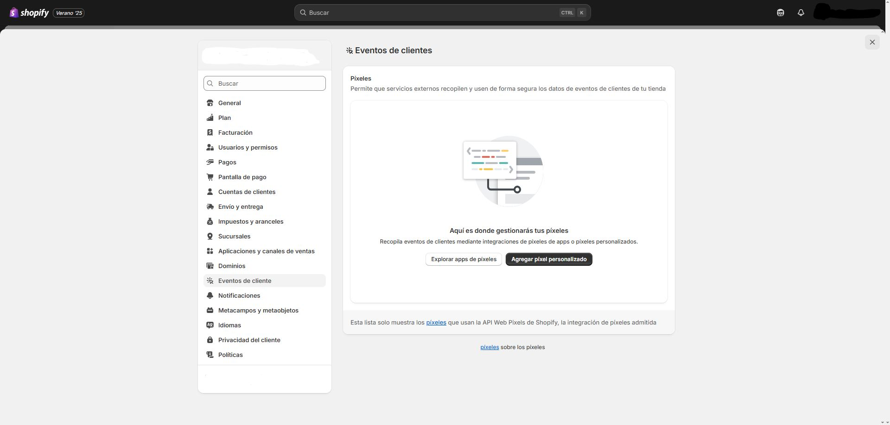
Configuración -> Eventos de clientes: gestión de píxeles, consentimiento y pruebas. -
Notificaciones (Configuración → Notificaciones)
Desde Configuración → Notificaciones gestionas los avisos que se envían a clientes (por email y SMS) y a tu equipo (nuevo pedido, etc.). Las plantillas vienen listas y puedes personalizarlas con tu logo, colores y contenido. Notificaciones de la tienda.
1) Tipos principales
- Clientes: confirmación de pedido, actualización de envío y tracking, entrega, reembolso, listos para retiro en tienda, etc. (email/SMS según datos del cliente).
- Equipo (staff): avisa de nuevo pedido a correos que elijas.
2) Añadir destinatarios (equipo) para “Nuevo pedido”
- Ve a Configuración → Notificaciones → Notificaciones de empleados.
- En Destinatarios, pulsa Agregar destinatario y escribe el email a notificar.
3) SMS para clientes
Si el cliente deja teléfono en lugar de email y tu dirección comercial está en un país compatible, recibirá la confirmación por SMS (España, EE. UU., Reino Unido, Alemania, Italia, Francia, Canadá, Australia, Japón, Irlanda, Brasil y Nueva Zelanda, entre otros). SMS en Shopify.
4) Personalizar plantillas (logo, colores, HTML/Liquid)
- En la parte superior de Notificaciones puedes aplicar logo y color de marca a todas las plantillas.
- Abre cualquier plantilla (p. ej., “Confirmación de pedido”) y edita el asunto y el cuerpo (HTML con Liquid). Puedes previsualizar y enviar prueba.
- Si cambias idioma del tema, ten en cuenta cómo afecta a las plantillas según lo que hayas modificado (solo asunto, solo cuerpo o ambos). Si vendes en varios idiomas, los clientes reciben las notificaciones en su idioma cuando está activado. Personalizar plantillas.
5) Variables disponibles (Liquid)
Usa variables Liquid para insertar datos (pedido, cliente, envío, etc.). Consulta la referencia para saber qué está disponible en cada notificación. Variables de notificación.
6) Buenas prácticas de entregabilidad
- Usa un remitente con dominio propio y autentícalo (SPF/DKIM) para reducir spam/bounces (se configura en Notificaciones/Correo del remitente y autenticación de dominio).
- Mantén el HTML ligero y con texto alternativo en imágenes.
7) Notas sobre Inbox y otros canales
Para mensajes de Shopify Inbox (chat), activa las notificaciones de escritorio/móvil/email desde su propio panel. Notificaciones de Inbox.
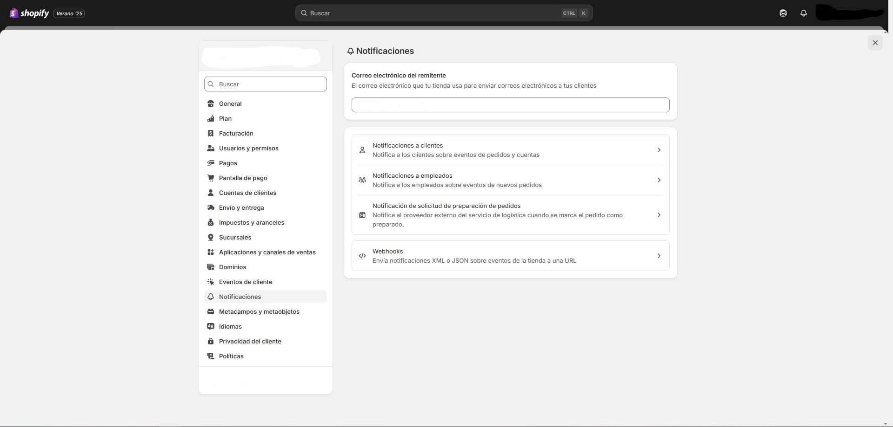
Configuración -> Notificaciones: personalización de plantillas, SMS y avisos al equipo. -
Metacampos y Metaobjetos (Configuración → Datos personalizados)
Los metacampos añaden campos a recursos existentes (productos, variantes, colecciones, clientes, pedidos, etc.) y los metaobjetos te permiten crear tipos de contenido nuevos y reutilizables (p. ej., guías de tallas, especificaciones, perfiles de marca) que luego conectas con tu tienda. Metacampos · Metaobjetos.
1) Crear definiciones de metacampo
- Ve a Configuración → Datos personalizados y elige el recurso (Producto, Colección, Cliente, Pedido…).
- Pulsa Agregar definición, nombra Espacio de nombres.clave, elige el tipo (texto, número, color, archivo, referencia, lista…) y, si aplica, validaciones.
- Guarda la definición y luego añade el valor desde la ficha del recurso (producto, colección, etc.).
2) Mostrar metacampos en la tienda
- Con temas OS 2.0, conecta metacampos como fuentes dinámicas desde el editor del tema (secciones/bloques → icono de base de datos → elige tu metacampo).
- También puedes usarlos en Liquid si tu sección no admite fuente dinámica.
3) Crear un metaobjeto (contenido estructurado reutilizable)
- En Configuración → Datos personalizados → Metaobjetos crea una definición (p. ej., “Guía de tallas”) con sus campos (texto enriquecido, imagen, tabla, etc.).
- Crea entradas de ese metaobjeto (cada talla/marca/colección puede tener su ficha).
- Opcional: crea en “Producto” un metacampo de referencia a metaobjeto para vincular la entrada adecuada a cada producto.
- Muéstralo en la tienda conectando la referencia como fuente dinámica o mediante Liquid.
4) Casos útiles
- Categorías de producto (atributos): añade talla, material, color, etc., con metacampos de categoría estandarizados.
- Especificaciones técnicas/Manual: metacampos por producto o un metaobjeto “Ficha técnica”.
- FAQs por colección: metaobjeto “FAQ” + referencia desde colección.
- Perfiles de marca: metaobjeto con logo, descripción e imágenes y un listado en una página.
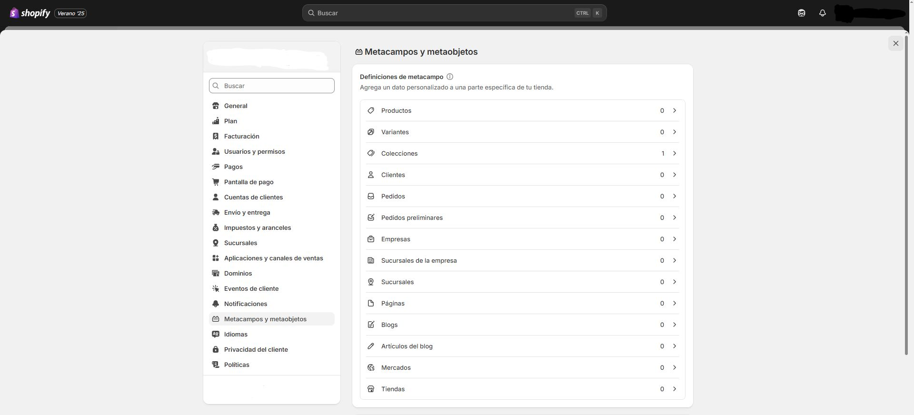
Configuración -> Metacampos y metaobjetos: Datos personalizados para metacampos (definiciones/valores) y metaobjetos (definiciones/entradas) conectados a secciones del tema. -
Idiomas (Configuración → Idiomas · Markets → Idiomas y dominios)
Shopify permite vender en varios idiomas. Primero añade y publica idiomas desde Configuración → Idiomas. Luego, en Configuración → Markets, puedes asignar idiomas por mercado (y cambiar el idioma predeterminado si usas subcarpetas o dominios internacionales). Resumen de localización y traducción · Gestionar idiomas.
1) Añadir y publicar idiomas
- Ve a Configuración → Idiomas y pulsa Añadir idioma. Cuando lo tengas listo, Publícalo para que sea visible en la tienda.
- Opcional: en Configuración → Markets → (tu mercado) → Idiomas y dominios añade/quita idiomas para ese mercado o cambia su idioma predeterminado (requiere subcarpetas o dominios configurados).
2) Traducir contenido
- Usa la app oficial Translate & Adapt para traducir productos, colecciones, páginas, blogs, políticas y más. Permite traducción automática y edición manual por lenguaje/mercado.
- También puedes traducir el tema (textos de interfaz) desde el editor de idioma del tema o con CSV.
3) Pantalla de pago (checkout) e idioma
El checkout se traduce desde Configuración → Pantalla de pago → Idioma del checkout (Administrar) y se muestra en el idioma activo del cliente si está publicado.
4) Selector de idioma y recomendaciones
- Activa el selector de idioma en tu tema (cabecera o pie) para que el cliente cambie de idioma.
- La app Geolocation de Shopify puede recomendar idioma según ubicación/preferencias del navegador.
5) SEO internacional (URLs y
hreflang)- Con subcarpetas o dominios por mercado/idioma, Shopify genera automáticamente etiquetas
hreflangy las incluye en el sitemap para ayudar a los buscadores.
6) Buenas prácticas
- Publica solo idiomas con traducciones completas (evita “mezclas”).
- Centraliza traducciones en Translate & Adapt y sincroniza tras cambios de producto/tema.
- Si vendes por Markets, usa subcarpetas o dominios y verifica que el selector de idioma funcione en todas las plantillas.

Configuración -> Idiomas: alta/publicación, traducciones (tema y contenido), selector y SEO internacional. -
Privacidad del cliente (Configuración → Privacidad del cliente)
En Configuración → Privacidad del cliente configuras tu política de privacidad, el banner de cookies, la página de exclusión de uso compartido de datos y controles por región. Es el panel central para cumplir normativas y reflejar las preferencias de consentimiento del usuario en toda la tienda. Establecer privacidad del cliente.
1) Banner de cookies y páginas legales
- Activa el banner de cookies y enlaza tu Política de privacidad. Si operas en varias regiones, ajusta el comportamiento por país/mercado.
- Habilita (si procede) la página de exclusión de “venta/compartición” de datos para marcos legales que lo exigen.
2) Consentimiento y APIs de privacidad
Shopify expone la Customer Privacy API (frontend) y APIs en Checkout para que tu banner/CMP establezca y consulte el consentimiento (marketing/analítica/preferencias), afectando píxeles, audiencias y checkout.
3) Google Consent Mode v2 (opcional)
Si usas Google Ads/GA4, implementa Consent Mode v2 mediante tu CMP o un píxel personalizado y propaga las señales de consentimiento a Google.
4) GDPR/CCPA: solicitudes de datos del cliente
- Acceso/portabilidad: desde Clientes, abre el perfil y exporta/entrega los datos solicitados.
- Supresión/redacción: Clientes → perfil → Más acciones → Borrar datos personales. Shopify redacta datos personales y mantiene datos no personales (líneas de pedido, importes) por requisitos contables; si hay pagos preautorizados/suscripciones, lee los avisos antes de borrar.
- Debes contactar a terceros con los que compartiste datos fuera de Shopify.
5) Apps y redacciones (webhooks)
Cuando tramitas una solicitud, las apps que acceden a datos reciben webhooks de data request/redact para que también borren/entreguen datos; revisa la documentación si usas integraciones.
6) Buenas prácticas
- Publica políticas claras (privacidad/cookies) y limita scripts a lo necesario.
- Centraliza consentimiento con tu CMP o el banner nativo y pruébalo en navegación/checkout.
- Audita apps y su acceso a datos periódicamente.
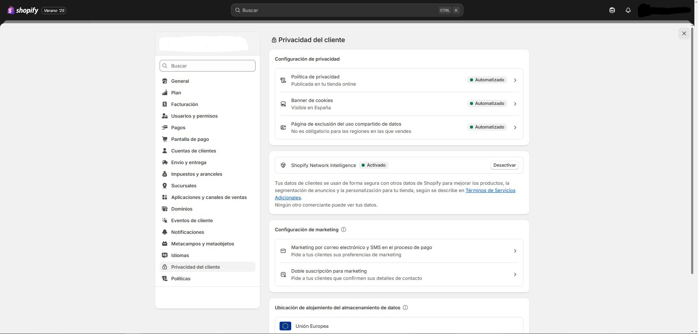
Configuración -> Privacidad del cliente: banner de cookies, ajustes por región y propagación del consentimiento a píxeles/checkout. -
Políticas (Configuración → Políticas)
En Configuración → Políticas puedes crear o generar las páginas legales de tu tienda: Política de devoluciones, Política de privacidad, Términos del servicio, Política de envíos, Aviso legal y, si usas suscripciones, Política de suscripciones. Shopify ofrece plantillas; revísalas y adáptalas a tu negocio antes de publicarlas. Agregar políticas de tienda.
1) Crear/editar tus políticas
- Ve a Configuración → Políticas.
- En “Políticas por escrito”, elige la política que quieras completar.
- Redacta tu texto o pulsa Insertar plantilla y edítala con el editor de texto enriquecido (puedes añadir enlaces e imágenes).
- Guarda para publicar.
2) Contenido sugerido por política (resumen práctico)
- Devoluciones: plazo, condiciones del artículo, exclusiones (“venta final”), quién paga el envío de devolución, cargo por reposición si aplica, pasos del proceso.
- Privacidad: qué datos recoges, base legal/consentimiento, uso compartido con terceros, derechos del usuario (acceso/supresión), contacto DPO/soporte.
- Términos: condiciones de compra, precios/impuestos, limitaciones, propiedad intelectual, jurisdicción.
- Envíos: zonas, tiempos estimados, tarifas, transportistas, incidencias y aduanas.
- Aviso legal: datos de la empresa (razón social, domicilio fiscal, NIF-IVA, contacto), especialmente útil en la UE.
- Suscripciones (si procede): ciclo de facturación, cancelación, reembolsos parciales, renovaciones.
3) Reglas de devolución (automatiza tu política)
Además del texto legal, define Reglas de devolución (plazo, coste de envío de devolución, cargo por reposición y excepciones de “venta final”). Puedes activar las devoluciones por autoservicio para que el cliente solicite la devolución desde su cuenta y vea la estimación del reembolso según tus reglas. Configurar reglas y política de devoluciones.
4) Dónde se muestran y cómo enlazarlas
- Al agregarlas, Shopify las enlaza automáticamente en el pie del checkout y, según el tema, en páginas de producto (política de envíos) y revisión del pedido (devoluciones).
- También puedes añadirlas al menú del pie/cabecera desde Contenido → Menús.
- Enlaces directos:
/policies/refund-policy,/policies/privacy-policy,/policies/terms-of-service,/policies/shipping-policy,/policies/subscription-policy.
5) Idioma y actualizaciones automáticas de privacidad
Algunas plantillas pueden generarse en inglés y en ciertos casos en francés, italiano y español. Además, Shopify ofrece configuración de privacidad automatizada (banner de cookies, exclusión) que puede mantener tu tienda alineada cuando cambias ciertos ajustes. Idiomas y privacidad automatizada.
6) Cumplimiento (UE y otros marcos)
Verifica con tu asesor legal que tus políticas cumplan normativa local (p. ej., RGPD en la UE) y que tu banner de cookies/consentimiento esté correctamente configurado. RGPD en Shopify.
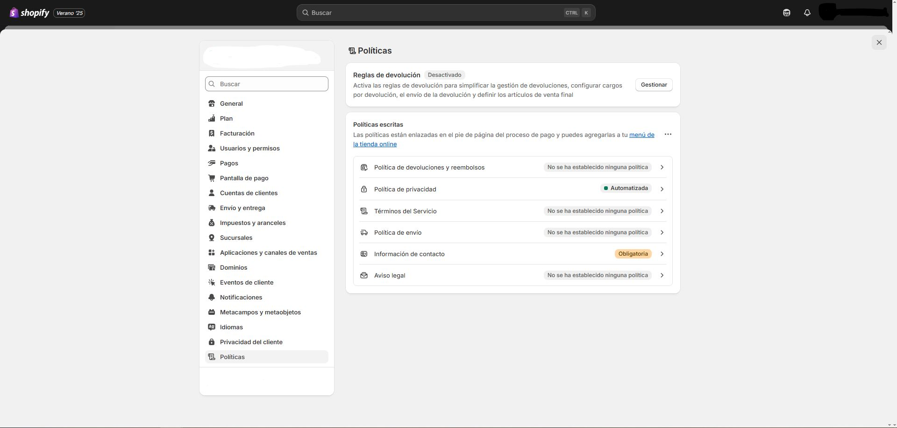
Configuración -> Políticas: texto legal + reglas de devolución; se enlazan en checkout y puedes añadirlas a los menús. -
Contacto y soporte técnico
Para profundizar en el tema de Shopify, diríjase a la documentación correspondiente y a los recursos informativos asociados.